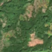
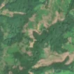

2,9 ha · Valea, com. Zam
văzută schimbată prima dată pe 15 mai 2026


Autorizația cea mai apropiată nu acoperă tăierea: schimbarea cade în afara parcelei autorizate.
APV 2400132900760 · Ocolul Silvic Ilia, la 68 m
Terenul: în afara amenajamentelor silvice publicate (pășune, mal de apă sau pădure privată fără amenajament în registru).
Ce se vede în poze: În poza detaliată și în imaginea «înainte», zona marcată era acoperită de pădure deasă. În imaginea «după» apare o fâșie de pământ gol, deschis la culoare, care taie pădurea, în timp ce pădurea din jur rămâne verde. Aceasta arată că arborii au fost tăiați, deși fâșia ar putea fi și un drum de exploatare.
în arie protejată: Munții Metaliferi